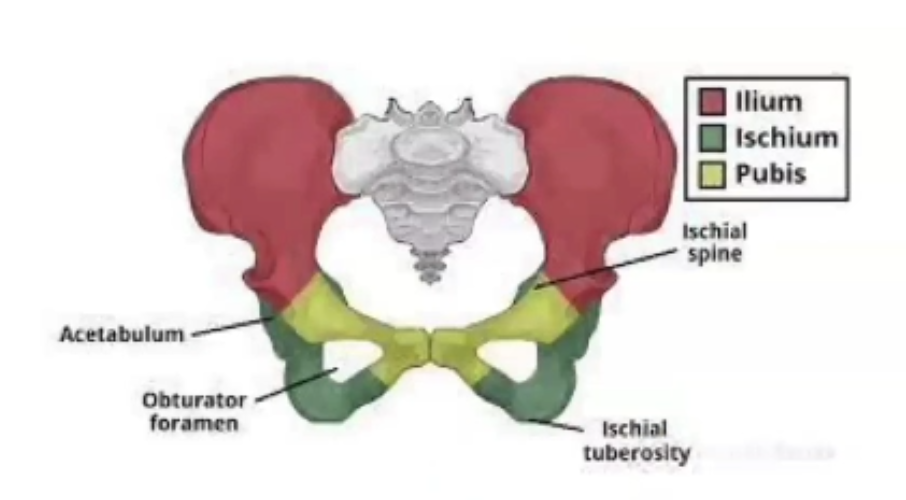
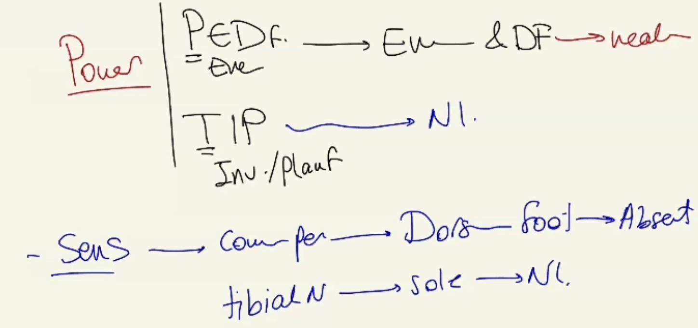
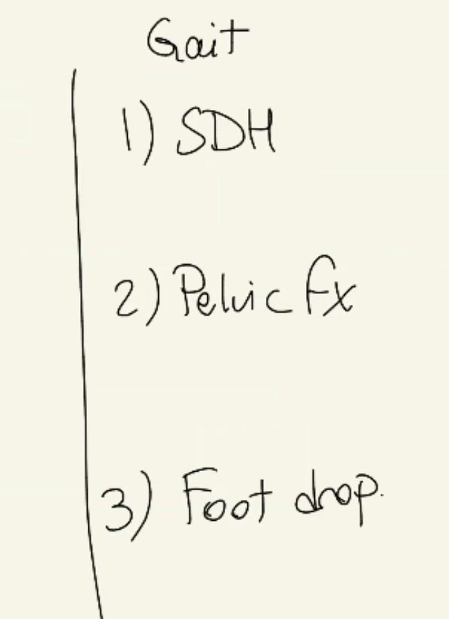

Gait Abnormality V2 & V3 (Pelvic/Ischial Fracture and Common Peroneal Nerve Entrapment)
Source: Dr. Amir workshop — Med workshop 2 - 2026 / CLASS 2 NEUROLOGY (Aug 2026 drop) · Specialty: neurology
Overview
Two further gait-abnormality versions. Version 2 looks similar to the earlier case but is a musculoskeletal presentation that appears in the online exam (with the physical examination given on a card). Version 3 (a 2025 pilot) is a foot-drop case – a variation of the strawberry-picker PE case – centred on a lower-limb neurological examination. Because the stem does not reveal which version you have, keep an open mind and do a thorough, grouped history and examination.
Version 2 – History Taking
Open-ended question, respond to the concern, then clarify the complaint (pain, balance, or weakness). This patient reports pain in the legs, so explore pain with SIQORAA:
- Site: back of the thigh
- Intensity: numeric score
- Quality: dull ache versus sharp
- Onset: 1-2 days ago (acute), constant or intermittent, progression
- Radiation: radiates down the leg
- Aggravating/alleviating: worse on walking
Two important red-flag screening questions in a lower-limb MSK case: is it worse on walking, and can the patient bear weight? This patient cannot stand on the leg, indicating a significant problem.
Version 2 – Differentials
Given acute posterior thigh pain radiating down with inability to weight-bear, reorder the differentials with musculoskeletal causes first:
- Muscle: myopathies (muscle pain), hypothyroidism, statin-related (rhabdomyolysis), myositis (viral/infective – fever, swelling, redness, rash; consider cellulitis)
- Traumatic: recent trauma/fall – probe the mechanism (tackled at soccer, fell on the hip), head injury, ability to bear weight after injury, popping/clicking sounds (tendon/ligament), bruising, swelling, ability to move ankle/knee/hip
- UMN: stroke, tumour, ICH – blurred vision, slurred speech, weakness, numbness, headache, anticoagulant use
- LMN: radiculopathy (back/neck pain), bladder/bowel disturbance
- Cerebellar/vestibular: balance problems, alcohol, hearing loss, tinnitus, nausea/vomiting
Parkinson disease and full geriatric screening are less relevant in a young patient with an evolving traumatic picture.
Version 2 – Examination and Diagnosis
PE on a card: swelling and bruise on the posterior thigh, tenderness specifically over the ischial tuberosity, normal tone/sensation/reflexes, power reduced due to pain, no pallor, decreased range of movement of the hip on the affected side, equal lower-limb length bilaterally.
Diagnosis: pelvic fracture – a fracture involving the ischium (ischial tuberosity). The pelvis is a ring of three bones forming part of the hip joint; a fracture here reduces hip range of movement (the ischium contributes to the acetabulum). This is contrasted with femoral fractures (subcapital, intertrochanteric, neck), where the leg lies in a characteristic position with reduced range of movement and tenderness over the femur.
Version 3 (2025 Pilot) – Foot Drop History
Walking difficulty over a number of days. On clarifying, the patient reports leg weakness. Timing: started 1-2 days ago; nothing makes it better or worse. Neurological deficit screen reveals numbness on the outer part of the leg. No blurred vision, speech problem, headache, weight loss or head injury. LMN screen: no back/neck pain, no bowel/bladder problem, no leg trauma. Muscle screen: no rash, joint pain, stiffness, fever, weather preference or medications. On exercise history: recent strawberry picking with the family – squatting compresses the common peroneal nerve at the fibular head.
Version 3 – Lower-Limb Neurological Examination
Core examination: lower-limb neurology (weakness and numbness in the leg); relevant examinations: cranial nerves, upper limb and special tests.
- General appearance: level of consciousness, rashes
- Vital signs (temperature for infection)
- Inspection: wasting, fasciculations
- Tone: hip, knee, ankle – normal
- Power (nerve-specific): peroneal nerve – eversion and dorsiflexion (weak); tibial nerve – inversion and plantarflexion (normal)
- Sensation: common peroneal nerve over the dorsum of the foot (absent); tibial nerve over the sole (normal)
- Special tests: Tinel tap over the fibular head reproduces symptoms (positive); straight-leg raise normal (against L5 radiculopathy)
- Gait: high-steppage gait
Version 3 – Diagnosis
Diagnosis: common peroneal nerve entrapment – a nerve crossing the outer side of the knee is under pressure, most likely from squatting while strawberry picking. Reasons: weakness and numbness in the leg, sensory loss from the outer leg to the dorsum of the foot, a squatting history, and a positive tap (Tinel) sign over the fibular head. This is a lower-motor-neuron problem. Key differential: L5 radiculopathy (the best second differential and a cause of foot drop).
The gait-abnormality cluster therefore comprises: chronic subdural haematoma (older man), pelvic fracture (young woman) and foot drop (pilot case).
Case Figures










🔬 Expert Review & Enhancements
Reviewed by: history-taking-expert (Australian clinical supervisor) · fact-checked against the irStudy medical textbook RAG index.
✏️ Corrections
The correct structure is the common peroneal (fibular) nerve, which winds around the fibular head and, when compressed, causes foot drop with weak dorsiflexion/eversion and sensory loss over the dorsum of the foot. The perineal nerve is a branch of the pudendal nerve supplying the perineum and is unrelated to foot drop.
Equal leg length argues against a displaced proximal femoral fracture, not for a pelvic fracture. Given isolated ischial-tuberosity tenderness with a hamstring/sudden-loading mechanism in a young patient, the precise diagnosis is an ischial tuberosity avulsion fracture. Inability to weight-bear after trauma mandates urgent X-ray (and CT if needed) and orthopaedic referral.
⭐ Suggested Enhancements
🏷️ Metadata
📚 Reference Citations (RAG)
AMC Handbook of Clinical Assessment p.430 qdrant:2739255e-e747-484e-bc55-f0fe744847a9
John Murtagh General Practice, 8th Edition p.3742 qdrant:f901597f-2027-4f20-926f-73709fdb9957
John Murtagh General Practice, 8th Edition p.3671 qdrant:f4d71942-5c81-4b74-9102-f829f83175c9